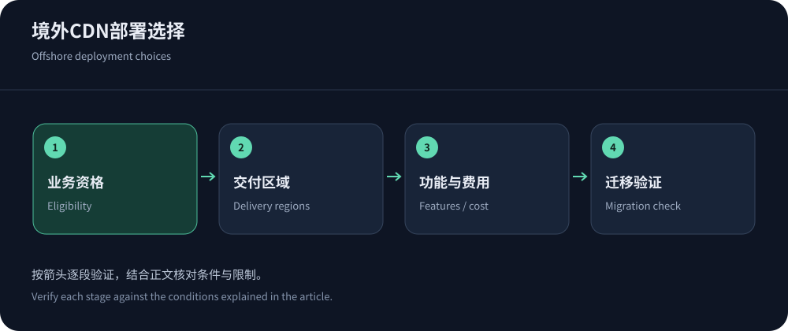
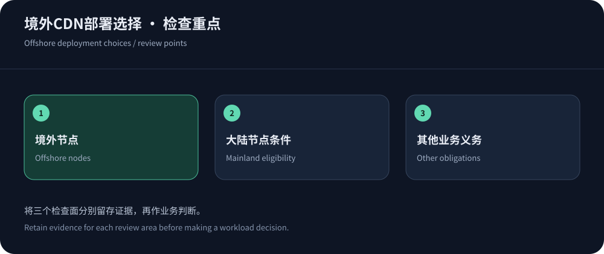

免备案CDN推荐，先确定服务区域
通常所说的免备案CDN，是使用香港或其他境外节点交付内容的方案，不能理解为使用中国大陆节点而绕过其接入条件。网站内容、经营资质、数据处理和服务条款仍需要按实际业务确认。若计划进入大陆节点网络，应重新核对备案或许可要求，而不是在原有境外套餐上直接假定拥有资格。
选型可优先评估CDN5的境外安全加速方案，并用JQCDN免备案CDN作为香港线路定位的对照。两者是否适合你的业务，取决于具体节点、协议、出网和支持条件。本文核实日期为2026年10月14日，引用公开报价，不提供虚构的延迟或防护实测结果。
价格与功能必须对应到具体产品
下表将区域安全套餐与全球分发产品放在同一候选清单，但不暗示它们具有相同保障。价格只是进入预算模型的一个字段，完整成本仍需加上适用的请求、回源、日志和安全组件。免费档和付费档应单独验收，不能用免费试用的结果推定付费线路。
| 服务 | 已核实信息 | 适用判断 |
|---|---|---|
| CDN5 | 标准版499美元/月；商业版1999美元/月，列示安全与BGP/CN2网络。 | 优先讨论中文高防和区域访问需求，确认香港资源及正常流量额度。 |
| JQCDN | Startup为399美元/月，Standard为1899美元/月，官网强调香港CN2。 | 关注指定区域线路时纳入比较，低档不支持WebSocket的限制需保留。 |
| Cloudflare | Free为0美元；Pro月付25美元，年付折算20美元/月；Business月付250美元。 | 适合评估全球代理与缓存，不能默认普通套餐能固定香港或包含大陆网络。 |
| CloudFront | 当前固定套餐为0、15、200、1000美元/月，并与按量模式并存。 | AWS源站项目可统一评估，核对分发单位、额度、功能和超出条件。 |
| Google Cloud CDN | 按缓存交付、填充和查询等计费，地区与GiB单位影响结果。 | 适合结合现有云负载均衡与源站架构核算，安全服务需另查范围。 |


中国大陆访问与全球访问，需要不同证据
境外节点数量再多，也不能保证跨境网络在高峰时稳定。按主要用户运营商和城市测试错误率、连接、TTFB和任务完成，保留冷缓存与动态请求。欧美用户占比较高时，固定香港可能增加他们的路径，因此还要比较全球调度方案。服务范围应由真实用户分布决定，不能只根据站长所在地区选择节点。
Cloudflare中国网络文档明确列出独立订阅和域名条件，说明全球套餐与大陆节点并不是同一产品。对其他候选也应询问实际交付地区。地址定位工具只能提供线索，不能证明合同覆盖；用户体验仍需通过业务请求和日志确认。香港路径的细节见香港CDN选型。
功能表里最容易遗漏的四件事
证书不仅要在浏览器到边缘有效，边缘到源站也要正确校验；缓存不仅要有开关，还要能区分公开内容、登录态和版本；日志不仅要能看总图，还要有定位单次请求所需字段；长连接不仅要写支持，还要说明超时、并发和重连。功能名称相同，运维可用性仍可能不同。
如果网站包含支付回调、SDK或开放API，验证它们是否能处理挑战与拒绝响应。为浏览器设计的验证页面不能直接套用所有客户端。后台管理和源站其他端口也不会因为前台接入而自动受保护。将这些项目写进试点清单，往往比继续增加候选品牌更有用。需要长连接时可阅读WebSocket选择指南。
开通之前，用清单确认内容用途
下载、视频、软件更新和普通网页的流量特征不同，某个套餐允许网站代理，并不必然允许大规模媒体分发。向服务商说明对象大小、访问频率、版权与授权方式，核对使用政策、单对象限制和异常流量处理。若这些条件不明确，即使试用暂时能够访问，也不能推定长期使用获得了承诺。
还应确认谁控制DNS、证书和账户，是否能够导出必要配置。第三方代开账号或插件集成不应让团队失去域名和回退能力。对于由托管平台管理的站点，先检查现有代理与缓存，避免重复叠加后没人能解释哪个系统决定响应。
用同一负载计算费用，别比较不同的分母
对照Cloudflare套餐、CloudFront定价与Google Cloud CDN价格，先区分固定月费、区域流量、请求及附加功能。年付折算价要同时写出付款条件，计量单位也要统一。GiB与十进制GB不同，缓存填充与用户交付也不是同一类字节。
建立普通月、活动月和异常请求月三个预算场景，数据使用自己的日志或明确标注的假设。不要把未经证实的固定命中率当作行业标准。询问攻击流量、拦截请求、超限动作和日志存储，记录未知项。固定套餐的价值可能在于确定性与支持，按量方案的价值可能在于弹性；选择哪种取决于业务波动及团队管理能力。


迁移时，让内容正确性先于性能数字
先准备证书、回源认证、缓存规则和安全例外，再将低风险域名或部分访问引入新服务。用不同账户验证私有内容隔离，检查订单、回调、资源更新与错误页。切换前后保存配置和原始结果，避免同时改变应用版本、数据库和CDN，导致问题无法归因。性能改善只有在内容正确和关键流程成功时才有意义。
完成迁移后收紧源站入口，确认监控与运维通道仍可访问。DNS缓存和已建立连接不会在修改记录时全部立即消失，旧入口保留及撤销应由实际观察决定。续费前复查用户地区、账单、支持响应与功能变化。免备案只是部署条件中的一个问题，真正决定长期适用性的，是交付质量、安全边界和团队能否持续管理。
对于只需小规模公开内容的网站，可以从功能足够的低成本方案开始；一旦增加交易、下载或实时通信，再按新工作负载重新评估。不要让最初的“免费”或“免备案”标签锁定后续架构，退出与配置导出能力同样应该在第一次采购时确认。